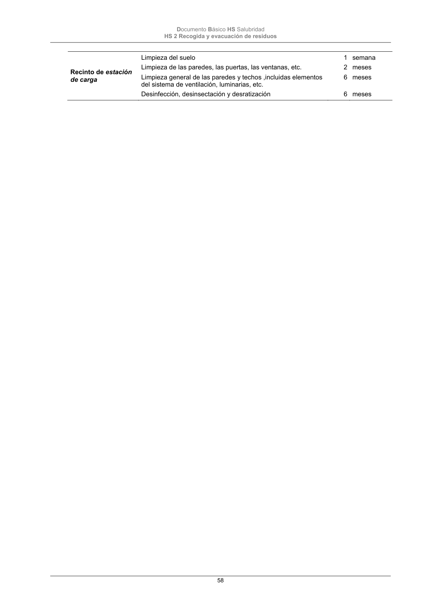

DB-HS · Página 58 · versión 2022-06-14
SHA256: 68df3caacc95f71aee2ec1ba7b2c65ae66155c21e3a8785521b8fdd4fd640d3b · página física 58 de 184 · métodos de encabezado
solo si están cotejados.
Formatos: Markdown · JSON de bloques · PDF p. 58 · imagen PNG
Documento Básico HS Salubridad HS 2 Recogida y evacuación de residuos 58 Recinto de estación de carga Limpieza del suelo Limpieza de las paredes, las puertas, las ventanas, etc. Limpieza general de las paredes y techos ,incluidas elementos del sistema de ventilación, luminarias, etc. Desinfección, desinsectación y desratización 1 2 6 6 semana meses meses meses
